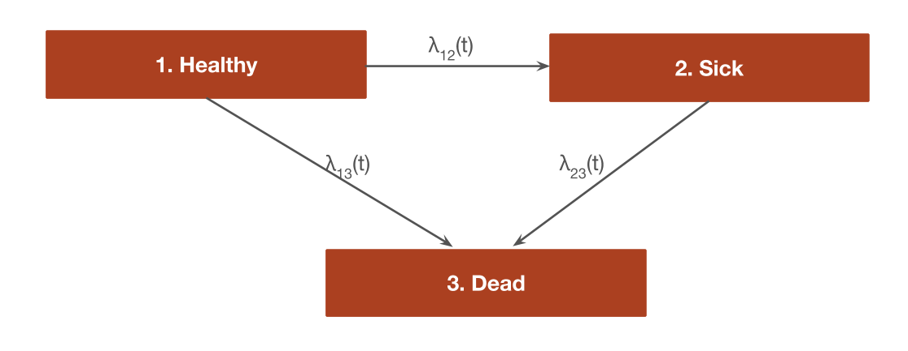

Our sick-sicker Markov cohort was time homogeneous, meaning that transition probabilities were constant over time. Although the model could be extended to be time-inhomogeneous so that transition probabilities depend on time since the start of the model, transition probabilities cannot depend on prior history. The partitioned survival model are similarly limited in that it made the somewhat implausible assumption that transition probabilities between the healthy and death and sick and death states are equal. An alternative approach is to use a semi-Markov model which relaxes these assumptions by allowing transition probabilities to depend on time since entering a new state.
If individual patient data is available, semi-Markov models can be parameterized using multi-state models, which are generalizations of survival models to more than 2 states that estimate hazard functions for each possible transition. This is ideal because it ensures that the simulation model is completely integrated with an underlying statistical model. To illustrate, we will continue the 3-state example from the partitioned survival model (PSM) but explicitly model the hazards of each transition: (1) healthy to sick, (2) healthy to dead, and (3) sick to dead. (Note that we could also fit a reversible model where there is also a transition from sick to healhy but we will not do that here to maintain consistency with the PSM.)

In multi-state modeling, a semi-Markov model is referred to as a “clock reset” model since time resets to 0 each time a patient enters a new state. State occupancy probabilities in clock-reset models can only be simulated in a general fashion using individual-patient simulation. While individual-level simulations can be computationally intensive, they run very quickly in the hesim package because they are implemented fully in C++ under the hood. hesim also simulates patients trajectories in continuous-time, which is faster than a discrete time approach. We refer to these types of models as individual-level continuous-time state transition models (iCTSTMs). You can learn more about them in the hesim package vignettes.
data <- rcea::sim_mstate_data(n = 2000)